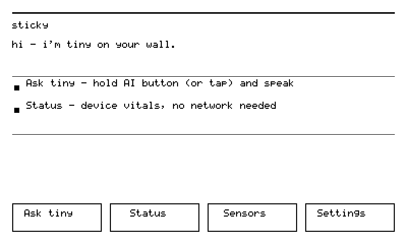

sticky·
Full custom ESP-IDF firmware that turns a Seeed reTerminal Sticky into a tiny.technology device — the e-ink embodiment of tiny, joining phone / web / necklace (Nicla Vision) / voice-necklace (Nicla Voice) as the 5th body, and the most independent one: it has its own Wi-Fi and talks to the backend directly.
Currently shipping fw 0.16.4-m14 over its own OTA channel (sticky-dev) — pinned to the version verified on the glass by a status receipt (fw_commit 33308249), never to what the tree builds (0.16.5 is committed and staged next). Sister project: strands-nicla — same philosophy (custom firmware, device-token identity, AP-portal provisioning, relay polling, OTA), different runtime: Nicla is OpenMV/MicroPython, Sticky is ESP-IDF C/C++ on ESP32-S3.

Not a mockup: the device's actual framebuffer, fetched over the relay with the screenshot verb — the same ground-truth loop the agent uses to verify its own renders.
What it does today·
A magnetic 800×480 e-ink card on the fridge that:
- answers to tiny — polls the relay every 5 s when awake, backing off to 60 s idle; sixteen verbs (
render_ui·say·screenshot·page·rotate·tap·swipe·scroll·status·sensors·miccheck·ask·voice·sleep·ota·messages) — fifteen advertised in the heartbeat so the dashboard lights buttons from the device's word, plusswipe(0.16.2), which dispatches but isn't in the caps array yet — the one known advertising gap. All of it reachable from any tiny surface viause_device. Full reference: Commands - renders agent-composed cards —
text/list/kv/chart/composite/qr/keyboard/menu+ a 4-button touch bar; taps flow back asui_tapevents, so the screen is a conversation. Spec: Cards - carries the owner's DMs — the messages app lives in firmware: inbox, threads, notification pushes, and replies typed on the e-ink keyboard, fetched with the device's own token — no phone, no owner-side process
- runs a local shell — stickyOS: home grid, page ring on the UP/DOWN keys, long-press-AI home key, settings, Wi-Fi join with an on-e-ink keyboard, a Bluetooth scan page (NimBLE observer — scan-only, honestly), IMU auto-rotate — stand the device on its side and the UI turns with it (
rotate 90holds,rotate autoreleases) — and swipe gestures: vertical scrolls, horizontal turns pages (in logical space, so it survives rotation; a draft outranks a gesture); navigation never touches the network, and every tap path has a relay twin (page …) - asks tiny questions — press the AI button, speak: PDM mic → WAV →
/api/media→/api/devices/ask→ owner-scoped full-agent turn (tools, memory, cross-device reach — it can check another machine's disk from the wall) → answer painted as a card. Same UX as the iOS app, no phone required - proves what it shows —
screenshotuploads the actual framebuffer (render ground truth);sensorsreads I²C live;miccheckmeasures the room's noise floor; the clock names its own source (sntp/rtc) - sleeps like e-ink — deep sleep keeps the goodbye card on glass at 0 mA; the AI button (EXT1) always wakes it
- updates itself — sha256-pinned OTA, staged, trial-boot with rollback armed
Hardware honesty
- The Sticky has a PWM buzzer (GPIO48), not a speaker — chimes yes, speech no. Voice input is first-class.
- E-ink cannot do video: full refresh is physically 1–2 s. Frame sequences are time-lapse cadence, not motion.
image/streamcard types are planned, not shipped (chartshipped in 0.14.16) — the dashboard refuses what the firmware lacks with the reason rather than pretending.- Turkish text is transliterated, not rendered — "Çağatay" shows as "Cagatay" until the extended-glyph font lands. The font has no ç pixels; the docs won't pretend otherwise.
The five bodies·
graph LR
T((tiny)) --- P[📱 phone]
T --- W[🌐 web]
T --- N[📷 necklace<br/>Nicla Vision]
T --- V[🎙 voice necklace<br/>Nicla Voice]
T --- S[🧲 sticky<br/>e-ink, own Wi-Fi]
style S stroke:#0ff,stroke-width:3pxThe necklaces relay through the phone; sticky talks to tiny.technology on its own — heartbeat every 30 s advertising its real capabilities, relay poll every 5 s, direct media upload, self-healing auth that never destroys identity on a single error — three strikes halt polling and raise the rescue portal, keeping the stored token for forensics. See the API contract.
Where to go·
- Quickstart — flash, provision (QR portal), enroll
- Commands — the sixteen envelope verbs, exact reply shapes
- Cards — the render_ui spec as shipped
- stickyOS — the local shell: pages, keyboard, parity rule
- Dashboard — remote control at
sticky.cagatay.my(WebAuthn) - Hardware — pin map, refresh modes, physical limits
- Recovery — read before flashing anything
- Architecture / API — module layer & wire shapes
- Roadmap · Journal — the gates and their evidence
Status·
M10 (stickyOS) in progress; M0–M9 gates closed with on-glass evidence — see the journal. Built end-to-end by tiny (builder + supervisor loops), including the backend route (/api/devices/ask) and this documentation.